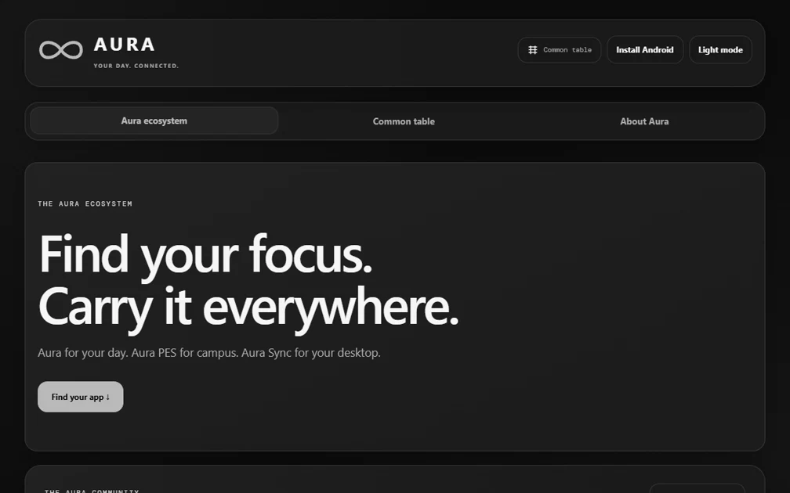
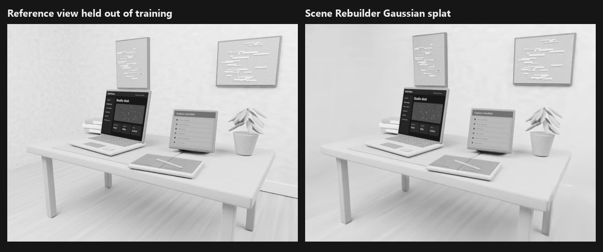
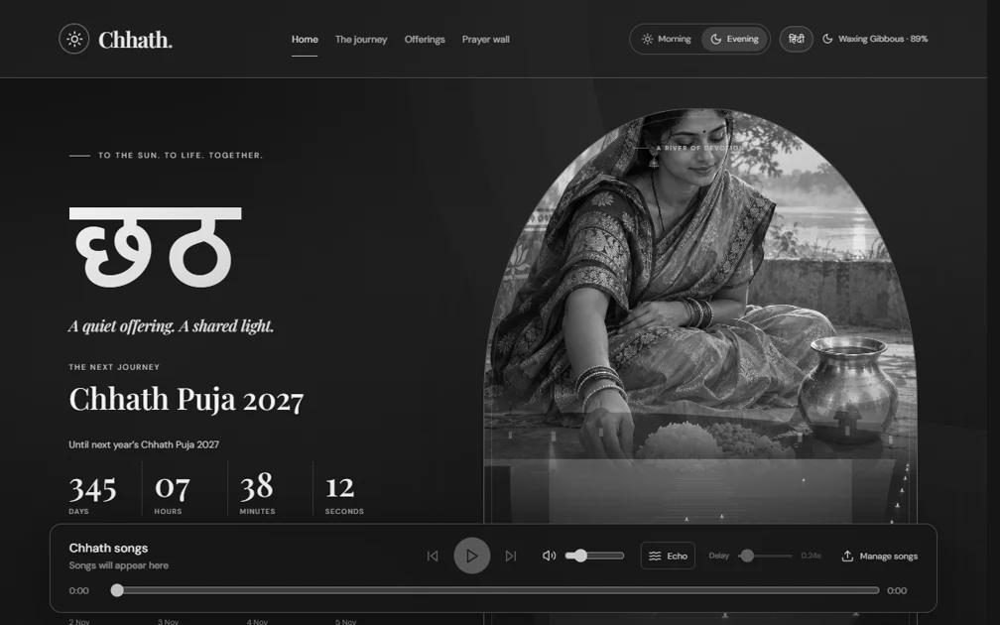
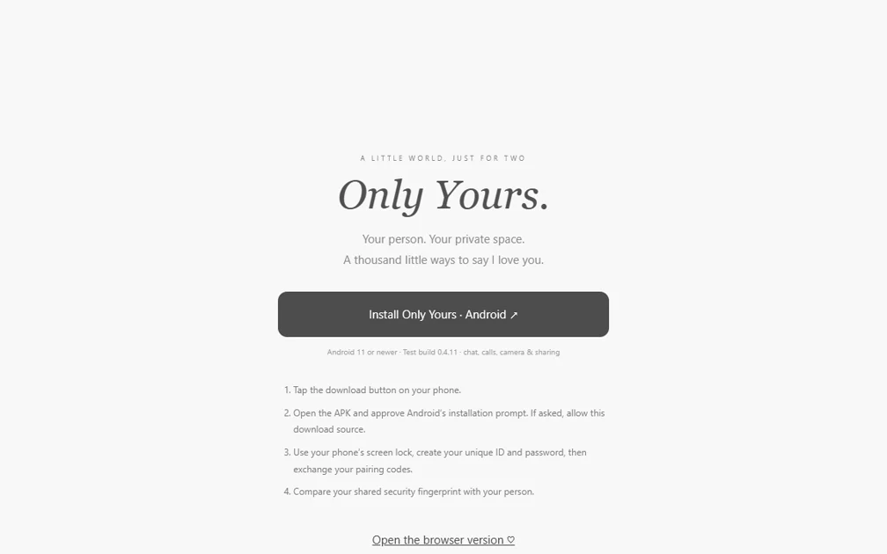

Aura
Three connected productivity apps. Aura tracks daily missions, focus sessions, and verified progress. Aura PES handles timetables, attendance, and bunk planning. Aura Sync connects Android sessions to Windows and Linux.

Three connected productivity apps. Aura tracks daily missions, focus sessions, and verified progress. Aura PES handles timetables, attendance, and bunk planning. Aura Sync connects Android sessions to Windows and Linux.

A local Windows app that turns photos and video into 3D scenes. I developed the pipeline from textured meshes and YOLOX object detection to GPU-trained Gaussian splats with COLMAP and Brush.
The gallery includes real and synthetic desk captures, input photos, and downloadable models.

An English and Hindi guide to the four days of Chhath Puja, from Nahay-Khay to Usha Arghya. It brings together the ritual timeline, offering preparations, and a prayer wall.

End-to-end encrypted messaging for couples with direct WebRTC communication and an encrypted relay for offline delivery. Pairing codes, a protected vault, and disappearing messages support privacy, while reactions and animations keep it playful.
An SDN lab prototype that detects abnormal TCP traffic in Mininet and responds through OpenFlow. The original project is credited to Rishon-P.
A PHP and MySQL app for finding and booking hostels, with separate user and admin workflows.